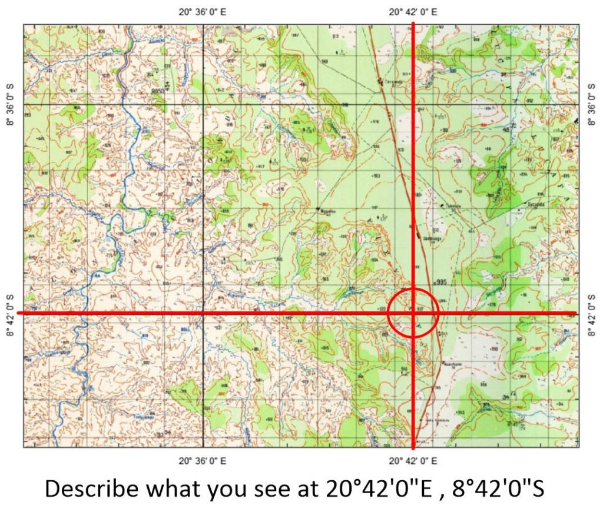
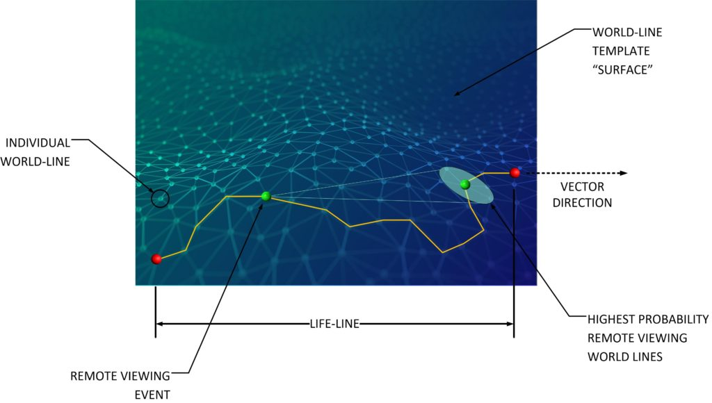
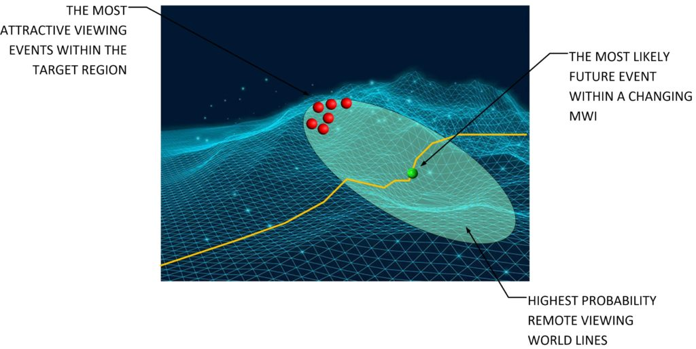
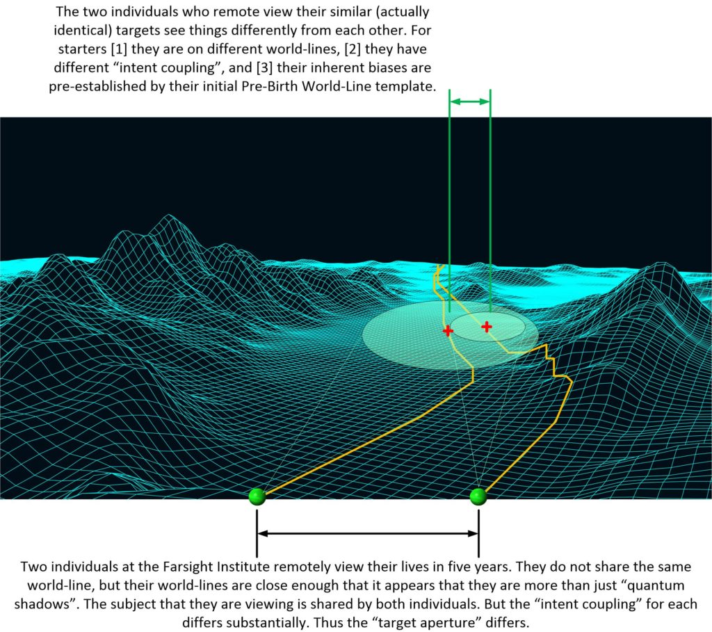
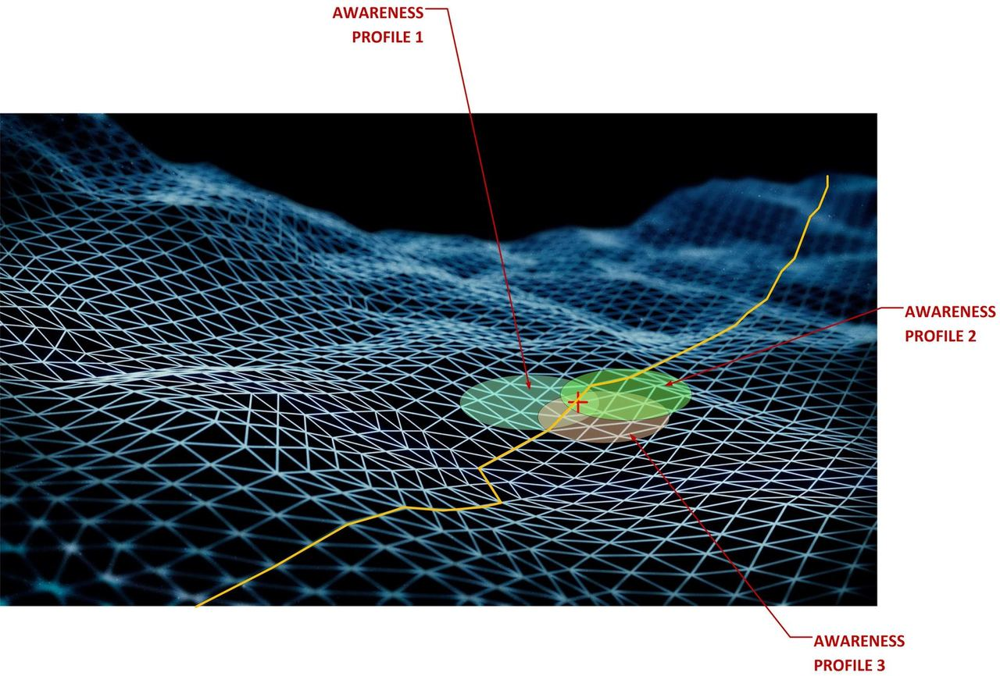
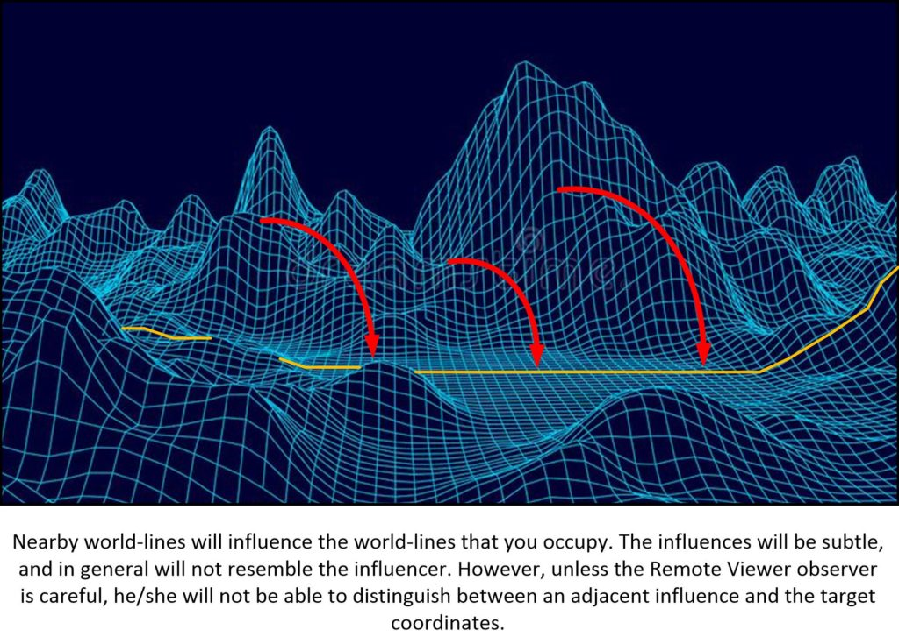
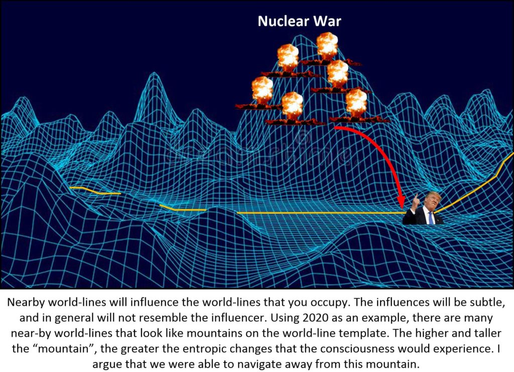
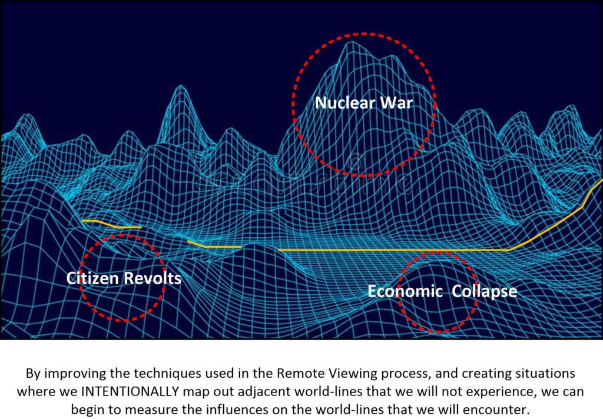
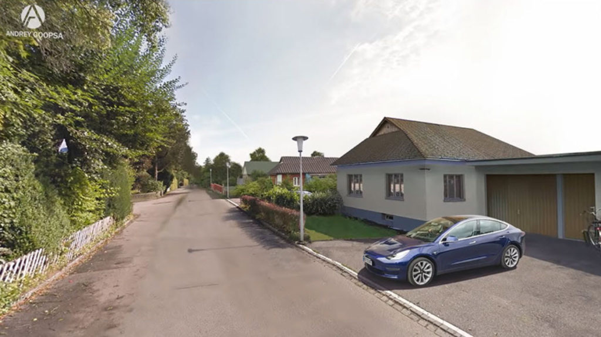

You guys realize that MM is not as popular or as well-promoted as such “big names” as Politico, MSN, Time, Newsweek, Rush Limbaugh, Drudge report or any other American media outlets. It’s that way for a reason. Well, maybe a couple of reasons, eh? But that doesn’t mean that we don’t have a readership. We do. And we have some pretty impressive readers with some pretty impressive credentials that follow us from time to time and throw out their “two cents”.
One such influencer is BlueNarwhal.
This fellow has an interesting point of view concerning some of the MM writings and I would like to expose the rest of the readership to his words and thoughts. Who knows, maybe he’ll end up being a contributor?
What is Remote viewing
I haven’t covered any Remote Viewing activity in terms of the MWI, simply because I am not an expert in it. All I have done is read a few books on it, and maybe practiced a time or two. But that’s just about it.
According to the “mainstream internet” / “mainstream media” it’s pseudoscience.
Remote Viewing Remote viewing (RV) is the practice of seeking impressions about a distant or unseen target, purportedly "sensing" with the mind. Remote viewing experiments have historically been criticized for lack of proper controls and repeatability. There is no scientific evidence that remote viewing exists, and the topic of remote viewing is generally regarded as pseudoscience. Wikipedia
But I can tell you that this “pseudoscience” is well funded by the United States and Russian governments. It is used by Bankers, and in American Industry, and has a track record of success that shows a sizable and significant record of success.
Remote viewing is defined as the ability to acquire accurate information about a distant or non-local place, person or event without using your physical senses or any other obvious means. It’s associated with the idea of clairvoyance, seemingly being able to spontaneously know something without actually knowing how you got the information. It is also sometimes called “anomalous cognition” or “second sight.”
Many of us experience this from time to time as an intuitive flash of insight that turns out to be correct. Many well-known entrepreneurs and business people, like George Soros, Conrad Hilton, Thomas Alva Edison and Akio Morita, the co-founder of Sony, have attributed their business success to this ability. And we’ve all seen natural psychics perform seemingly amazing feats of mental skill on TV.
The difference between natural psychic receptivity and remote viewing is that the latter is a trained skill, a controlled process, that the average person can learn to do, to some degree or another.
The CIA uses Remote Viewing
Money and resources were given by the Central Intelligence Agency to Stanford Research Institute (SRI), located on the campus of Stanford University at the time, to test the possibility of remote viewing. The goal was to disprove that psychic functioning was real. No one wanted it to exist. It was the last thing that the military establishment wanted to worry about, especially if it was a new Soviet threat.
Physicists Russell Targ and Hal Putoff working at SRI were tasked with determining whether Extrasensory Perception (ESP) and related phenomena were real or not. Targ and Putoff set about to locate some natural psychics and test them. Their first subject was artist, psychic and scientist Ingo Swann of New York City who had demonstrated an ability to accurately “remote view” weather in various American cities. He had published some articles about ESP and also psychokinesis, the ability to mentally affect distant objects, when he worked with researcher Gertrude Schmeidler of City College, New York and the American Society for Psychical Research.
Ingo Swann - Consciousness Researcher | Ingo Swann https://ingoswann.com INGO SWANN (September 14, 1933 January 31, 2013) was internationally known as an advocate and researcher of the exceptional powers of the human mind, and as a leading figure in governmental and scientific projects to investigate and identify the scope of subtle human perceptions.
Working with Schmeidler, Swann had shown that he could affect the temperature of thermistors sealed in insulated thermos canisters twenty-five feet away from him.
At a friend’s request, Swann sent his published findings to Putoff, who asked Swann to come to SRI and demonstrate his abilities. The first thing they had Swann do was to see if he could affect a super sensitive, electromagnetically shielded quark detector buried five feet underground in a cement floor.
Every time Putoff asked Swann to think about the detector (used to detect subatomic particles), the readings from the device would noticeably deviate from the baseline readings. Putoff was convinced that Swann had special abilities and so the program to test and develop remote viewing began.
At first they had Swann view objects in a box: this was a practice he was good at but quickly became bored with. Swann said to them: “I can view anything in the universe, this is a trivialization of my abilities.”
Remote Viewing physical locations by GPS coordinates
A few days later he came up with a new way to do remote viewing: viewing map coordinates.
Targ and Putoff went out and bought the biggest atlas they could find at the local book store. The would pull coordinates off of the map, and write them down on paper inside a sealed envelope. Then give the envelope to the remote viewer.
The Swann’s coordinate map viewing turned out to be a big success.
Of course, not everyone believed that is was truly possible. A critic at the Central Intelligence Agency suggested that maybe he had memorized the entire global map.

Swann went on to use randomly chosen numerical coordinates to view randomly selected events, people and structures around the planet. He performed equally well using this coordinate-based viewing system.
Swann coined to term “remote viewing” to describe the process though you can question whether the information is actually remote to the viewer or whether the process is entirely visual.
Some people are more sensitive to auditory, kinesthetic or other types of sensory information and few viewers actually “see” the target very clearly. Nonetheless, the name stuck and was sufficient to convince the intelligence agencies to fund the project.
Other viewers were also tasked to help Targ and Putoff understand remote viewing.
Pat Price
Pat Price, a former police commissioner from Burbank, CA also proved to be an excellent viewer. Price used his own system to view where he actually imagined that he was at the distant target site. His results were so good that the Central Intelligence Agency hired him to work for them directly.
Pat Price was one of the most skilled of the U.S. government’s remote-viewers of the 1970s. He was someone who regularly used his psychic abilities to spy on hostile nations for various military and intelligence departments. There is very little doubt that Price would have continued with his work had death not intervened in a very strange (and even sinister) way. Price passed away on July 14, 1975. It was, however, the nature of his death that was so disturbing of all. Just a few days before his untimely death, Price had a number of covert rendezvous’ with a variety of agents of the National Security Agency. Also, with personnel from the Office of Naval Intelligence. The meetings were initiated to determine if Price would be willing to undertake remote-viewing operations for both agencies. Price was gung-ho for both projects. In no time at all, the operations began. Just a few days after the meetings, Price flew out of Washington, D.C. His destination: he first took a flight to Salt Lake City, and then onto Sin City itself: Las Vegas. We may never know for sure if Price suspected that his life was in danger. The fact is, however, that with all of this top secret work being undertaken for U.S. intelligence, Price became concerned about his safety to at least a certain degree. To the extent that the purpose of the flight to have over some important, sensitive documents to a friend; just in case anything were to happen to him. It was in the afternoon of July 13 that Price checked into Vegas’ Stardust Hotel. All was going good. That is, until it wasn’t. As he approached the desk to check-in, a man walked straight into Price. It was a violent collision. He felt a shooting pain in his leg, as if he had been hit with a needle. With hindsight, that may very well have been what happened. In near-quick time, Price started to feel ill and decided to lay down and take a nap. But, not before handed over those precious documents. A few hours later, and still not feeling so good, Price met with several friends for dinner. There was something on his mind. Not only did Price tell them about the collision in the lobby just a few hours earlier, but he also confided in them that while he was in Washington, D.C. just a little more than a day earlier, he had seen someone slip something in his coffee. Having seen this chilling, covert action occur, Price left the coffee well alone and exited the restaurant quickly. As for the evening at the Stardust Hotel, it wasn’t going to well. In fact, not at all. Price cut the dinner meeting short and went back to his room. Around 5:00 a.m. the next day, Price woke up in significant physical distress. His breathing was not right. He had severe cramps in his back and stomach and he was sweating profusely. He called his friend who had those important papers, who quickly raced to Price’s room. A doctor was about to be called when Price began to convulse. Then, he went into cardiac arrest. Despite the best efforts of paramedics, who were quickly on the scene, and who managed to briefly kick-start his heart, it was all to no avail. Price was soon dead. It is a fact that Price had heart disease. With that in mind, his death could have been due to wholly natural causes and nothing else at all. But, we cannot – and should not – forget the fact that Price had seen someone surreptitiously slip something into his coffee, just a couple of days earlier. Then there was the matter of the potentially suspicious collision in the lobby of the Stardust Hotel in Vegas. To this day, the death of Pat Price – almost certainly the work of an overseas, hostile nation – is still discussed in hushed tones where the conspiratorial lurk. -Mysterious Universe
Joe McMoneagle
Back East, another natural viewer Joe McMoneagle, also known as “Remote Viewer No. 1,” worked directly with the U.S. Army and the Defense Intelligence Agency. He was also tested and found to have amazing abilities to describe and sketch distant locations. Upon retirement, McMoneagle was awarded a Legion of Merit award, in part, for his five years of remote viewing missions for the military and various government agencies.
Joseph McMoneagle is a former US Army soldier who played a leading role as a 'remote viewer' in the Star Gate psychic spying program run by American military and intelligence organizations until the 1990s. Since retiring from the military he has continued his activities in the private sector. He gives talks and public demonstrations, and has published several books. -PSI Encyclopedia
Swann’s 6-stage RV system
However, Swann was able to describe, with great precision, what he was doing with his mind and attention as he was viewing, an ability other viewers did not have. This allowed him to come up with a 6-stage system that could be taught to anyone, including you or me.
It became known as CRV: Coordinate (or Controlled) Remote Viewing.
Controlled Remote Viewing an introduction and explanationControlled Remote ViewingThe Six Stages of Controlled Remote Viewing CRV was first called “coordinate remote viewing” because it used geographic coordinates instead of outbounder “beacon” teams to focus the viewer on the target. Years later, Ingo Swann changed the term “coordinate” remote viewing to “controlled” remote viewing.
Swann’s CRV system is based on separating out signal from noise in your mind as you are viewing.
All the information is recorded during a session, but the viewer puts the noise in a different place on the paper than the signal. At the end of the session, you can separate them from one another.
The method became the basis of the remote viewing protocols that the U.S. army taught to several groups of viewers. The program lasted until 1995 when it was declassified; about $20 million was spent over the two decades.
Controlled Remote Viewing remoteviewed.com/crv_docs_full.pdf a. Remote Viewing (RV): The name of a method of psychoenergetic perception. A term coined by SRI-International and defined as “the acquisition and description, by mental means, of information blocked from ordinary perception by distance, shielding, or time.” b. Coordinate Remote Viewing (CRV): The process of remote viewing using geographic coordinates for cueing or prompting.
Princeton Engineering Anomalies Research Lab (PEAR)
During this time, the Princeton Engineering Anomalies Research Lab (PEAR) at Princeton University, run by Bob Jahn and Brenda Dunn, also conducted twenty years of research into remote viewing and so-called “micro-psychokinesis” with experiments on the effect of human intention on Random Number Generators (RNGs).
Princeton Engineering Anomalies Research pearlab.icrl.org The Princeton Engineering Anomalies Research (PEAR) program, which flourished for nearly three decades under the aegis of Princeton University's School of Engineering and Applied Science, has completed its experimental agenda of studying the interaction of human consciousness with sensitive physical devices, systems, and processes, and developing complementary theoretical models to …
They found that, looking at the cumulative results of hundreds of thousands of trials, that their subjects could influence about 2 or 3 events per 10,000 random coin flips seemingly moving the device away from true randomness in an inexplicable way.
The odds of these results being by chance were an astonishing 375 trillion to one.
The Technique – opening the aperture
When someone asks you to describe something, you normally proceed to name what you’re perceiving using nouns and symbols. Remote viewing is just the opposite. You begin by describing your perceptions without trying to identify anything about what they mean or what the larger picture is. You begin with basic gestalts: fundamental, general components of the target site like whether it’s manmade or living or natural. You then proceed to basic colors, smells, temperatures, shapes and sizes.
Only after you’ve been describing the target for a while can you proceed to more specific ideas and possibly names, nouns and more analytical types of information.
In this you way, Swan would say that you are opening the aperture of your perception, slowly and resisting the temptation to draw conclusions about what you are viewing.
Our minds are always attempting to draw conclusions from what we’ve perceiving at any given moment, but because you have no conscious, physical information to work from in RV, you’re almost always likely to be wrong if you do so. Which brings us to one of the great paradoxes of RV: the fainter the perception, the more likely it is to be accurate and the less likely you are to feel confident in that perception.
In other words, the more confident you are about your psychic perceptions during the session, the less likely those perceptions are to be correct! And the less confident you feel, the more likely it is that your perceptions are right on. How’s that for a paradox?
Good remote viewers learn to trust the feelings of uncertainty and ambiguity they get while doing a session.
Someone familiar with the military viewing program said that if a viewer finished a session and said with confidence “I nailed it!,” that viewer’s session would be thrown in the garbage. A good session is one in which the viewer has no idea what they’ve been doing or whether it’s accurate or not.
This is very different from the way our educational system, which stresses linear and rational thinking, trains us to deal with acquiring and processing information. And believe me, it takes some time to get used it.
Eventually, you see the benefits:
- You learn to trust your intuition more and don’t necessarily need to rationalize everything before you take action.
- You become more spontaneous which can often be a good thing if you’re used to over-thinking things in your life.
When the RV program was declassified, one of the two people asked to evaluate the program was statistician Jessica Utts, the head of the American Statistical Association at the time of this writing. She concluded:
“Using the standards applied to any other area of science, it is concluded that psychic functioning has been well established. Arguments that these results could be due to methodological flaws in the experiments are soundly refuted. Effects of similar magnitude to those found in government-sponsored research at SRI and SAIC (another government sponsored think tank) have been replicated at a number of laboratories across the world. Such consistency cannot be readily explained by claims of flaws or fraud.”
And researcher Dean Radin, doing very complex meta-analyses using the results of many studies about psychic perception over many decades, came to the same conclusion.
Looking at the entire population, not just trained viewers, RV is a weak effect, about four to eight percent higher than expected if we were only using our physical senses to gather information: yet, it’s consistently there in everyone.
How Does Remote Viewing Work?
So RV is scientifically proven to work. But how? What’s going inside the viewer’s body and mind? How do they access far away information with such great accuracy? You can pick your favorite explanation but the truth is, no one knows for sure. But my feeling is shared with others in that it has something to do with resonance, vibration and frequency.
Right brain thinking tends to be free flowing, intuitive and descriptive while left brain thinking is more analytical, linear and symbolic. Good remote viewers learn to distinguish their own left and right-brain thinking. They’re good at discerning the difference between the two and can separate signal from noise. Remote viewing tends to be more more accessible to the right-brain type. If you have artistic tendencies, can play music and have an ear for sound, are creative, and / or who are very spiritual as opposed to religious you would probably excel in Remote Viewing.
Picking Up Signals Through Vibrational Resonance
Where does the information come from? Well, if you look around the space wherever you are at the moment, the air will seem empty: you can’t see the air with your eyes. But you also know that it’s filled with electromagnetic information from cell phone signals, radio waves, TV signals, etc. So empty space can be filled with information coming to you from distance. Just because you can’t see it, doesn’t mean it isn’t there.
That information is coming to you through a type of vibrational resonance that fills space-time.
When you have a receiver that is tuned to the frequency of those signals, you’ll pick them up. All you need to do after that is to amplify the signal. Remote viewing doesn’t necessarily amplify the signal of what you’re viewing, but it does teach you how to reduce your own mental noise, your monkey mind.
What is the Farsight Institute
Since the CIA have been using this system for decades and has documented successes, the private industry has (often) decided to use the techniques, and skilled RV observers for their own purposes. And thus organizations have materialized that provide this service. The Farsight Institute is one such organization.
The Farsight Institute is a nonprofit research and educational organization that is dedicated to understanding the remote-viewing phenomenon itself through the process of scientific experimentation. It is our belief that a more complete understanding of the remote-viewing phenomenon will have collateral benefits to much of science and society. Due to how the remote-viewing phenomenon manifests in controlled experiments, the remote-viewing phenomenon appears to be based on quantum-processes. Much of the research done at The Farsight Institute blends theories of quantum mechanics with interpretations of experimental remote-viewing data. This has lead to new insights into the remote-viewing phenomenon as well as the nature of time and physical reality. For example, new research indicates that alternate futures actually do exist, and that the past exists simultaneously with the present. New research also suggests that information transfer across time does not require enormous energy consumption that would be associated with worm hole singularities. These questions are among the most profound addressed by science today. -The FarSight Institute
OK.
With all that introductory information out of the way…
Some introductory stuff on BlueNarwhal.
Just a little bit. Here’s the (edited) text to MM from BlueNarwhal…
I have had an interesting history in studying in some rather great detail everything on JT especially the physics, and then again everything with the drone affair.
I am assuming that he is referring to JT gravity. And (of course) he is referring to CARET when he mentions the “drone affair“.
I spent maybe a half year developing some implications of theory about how the glyphs actually function and felt I was starting to translate.
When he refers to the “glyphs” he is referring to the “language” used on the CARET drones. And while the language is similar to that of what I have been exposed to in the programming of my EBP, there are differences.
Some amazing breakthroughs have come from that disclosure all of which I realized for the most part I needed to keep quiet. I lived right where those sightings happened LoL. And then there’s my 20 years of work in Remote viewing being good friends with s few of the greats there - I focused a lot remote viewing future tech for clients. Worked with Pru, and good friends with many of her team. She shuttered her $8m per year RV commercial business (amazing stories in there) because TPTB ...
TPTB = “The Powers That Be”.
...(they) started a heavy target hijacking and remote influence attempts on her team of 15 viewers she had hand picked from thousands she had trained. And she is the subject of a major resources debunking after London Sunday Times cover story! Websites like pruwatch! She was a large scale magnet physicist before that. Courtney is a long time acquaintance too. Just all really good folks in truth. I love them all.
Luckily for me I have always been outside that fray. But that does not mean that it doesn’t go on. Most of the things that occur in our world and within our reality is unknown and completely transparent to the general population.
I would be in a <redacted> and eating at a restaurant there. And I would see other engineers and scientists come in during lunch break. They would have their name badges and I would casually over hear snippets. People talked and chatted about stuff using the arcane language of scientists, and defense contractors, and while others might not have a clue as to what they were discussing… but I would.
For all of us, it’s no “big deal”.
And of course, the mainstream media “news” would be about some “expert” proving that some photograph of a blurry UFO was a hoax. Yeah. It’s like that.
... anyway, again all of your words not only ring true but actually change the person reading it. It has been so utterly refreshing, validating, delightful and yes heartwarming because I can sense the absolutely wonderful nature of who you are, in the spiritually lovely person so it is an honor to read your words indeed. It’s like drinking clean fresh pure water, thank you!
Yes. I blushed when I read this. But we all like validation.
Yah funny you are of course just an nice average human being like me - who has a few really special skills and is really just working to have a wonderful life! Yeah fate has decided you were ready to live up to some future legacy and be a anchor exemplar establishing certain influence factors of evolutionary value - and why not!? What I think I like best about your writing is you have maintained a true service to others template expression so yeah you are kinda special but I can say that because I simply know to ain’t goin to yer noggin - your just sweet family man and right on for that!!
Again, I love this validation.
Remote Viewing in the MWI
Ok here’s what I wrote yesterday reflecting on what you have said in the context of my communications about this w Courtney at farsight...
So BlueNarwhal was discussing the MWI as it pertains to Remote viewing with Courtney at the Farsight Institute.
Working hypothesis: Predictive remote viewer naturally quantum-couples or entangles their viewing range to be occur across multiple proximal world line probability trajectories in the multiverse.
I have no problems with this. In fact, this hypothesis is well stated and agrees with all my posts and articles in my Prayer / Intention Index. Here, however he is saying that the use of Remote Viewing is like a special “radar” that targets high-probability trajectories (vectors) in the MWI. Here we illustrate a remote viewing exercise of an observer of his/her future.

Outlier world line target coupling by RVers occurs simply due to the collateral quantum attractive influence that higher relative disruptive novelty factors exert on selected souls and consciousnesses. e.g. a group of top viewers all view a disaster scenario that never happens in the world line from which the viewers viewed. Yet it clearly happened in some nearby world line of greater variance to our own.
This is a very interesting perspective. This is something that I have not paid attention to. It is the idea that nearby world lines might possess more “novelty” to the Remote Viewer. It could be more “attractive” and thus dominate the viewing “radar”.
Consider this…

Some of these influences can be injected into remote viewing sessions. This is due to the idea that individual remote viewers couple with targets via universal quantum field or “soul intelligence”. This target coupling process can allow insertion of universal intent to bias the remote viewer to couple with a more novel world line but less likely or even unlikely the mutual world line viewers are viewing from.
This explanation suggests that bias of the observer (the Remote Viewer) influences his / her ability to target properly.
This bias, of course, isn’t just interest of a personal nature, but also includes pre-disposition “programming” by the soul prior to injection onto the Pre-Birth World-Line template. Which is, of course, tied into the universal quantum field.
Universal Intent Coupling
This seems to a form of universal intent coupling with (a) conscious individual.
Interesting wording.
I would agree with this appraisal. Only that I refer to it with the very clumsy name “Pre-Birth World-Line Template“. Or in other words, perhaps the desire or natural inclination of a consciousness to view certain types, kinds or relative magnitudes of world-line possibilities (within the RV target coordinates) is a primary characteristic of the Pre-Birth World-Line Template.
Not just in geography, but in the way that the body thinks, feels and behaves.
This seems to a form of universal intent coupling with (a) conscious individual.
Again, could the ability to Remote View a place, an action, a person at another time is due to the “intent coupling” with another individual at that target coordinate? Or, not even a different person. Perhaps the same person as the Remote Viewer observer. Just viewing their knowledge and understanding at another time or another place…
But what if…
…if the person, thought streams, or target environment is in error? Suppose that you, back in 1982 remote viewed 2020. What would you see?
- A Real Estate mogul as President.
- Many protests everywhere.
- Some people wearing masks.
- News discussing how bad China is.
How would it manifest to a Remote Viewer as an observer of the events?
- Crowds cheering.
- Sad people wearing masks.
- Some general images of China.
- Riot police.
What would you conclude?
This is a bias. A bias associated with the nature of the “intent coupling” activity.
The effect is to widen the multiple world line range of consideration aperture... ... to provide high value insight about probabilities on other world lines... ... about similar lurking but unmanifest novel high impact eventualities for the viewer world line.
This is a very interesting observation.
I broke the sentence down into manageable bites for digestive autopsy, and to make fine MM points of interest.
Essentially, he is saying that the process of “intent coupling” with the thoughts, items, situation, or personalities at the target area opens up the target area, not narrows it down. And that the reason for this seems to be the bias associated with the mechanism used in “intent coupling”.
He says that this is a good thing. Because it provides us insight into the geography of the World-Line Template.

Could universal intent (being entangled for target coupling by remote viewers) be making individual intent see outcomes that might happen but likely won’t?
I would argue, YES.
We live in a universe where our manifested world-lines are based on thoughts that hit most probable targets. Sure, my pizza could conceivable grow legs and do a tap-dance before it jumps into my mouth, but that result is highly unlikely.
Instead, the most probable outcome, if you plop a pizza in front of me, is that I would get a slice and eat it.
I do not know if the geography of world-lines outside of our most probable world-lines that lie on our life-line path has any relevance. The only issue and aspect to this (and the only exception) is how these other world-lines affect the “quantum shadows” of the people that surround us that their “parent” consciousnesses that inhabit them.
Which was, as best that I can vocalize, what my role was in regards to our benefactors point of view. As a “dimensional anchor” I was able to “lasso” adjacent world-line trajectories to avoid mass catastrophes that are a typical result of the mass manipulation of people through use of media.
Improving sensing ability
While working with universal intent sentient within the multiverse quantum super field... ... encompassing all our souls and individual quantum clouds, ... there is no issue with requesting super sentience... ... to limit target viewing hits ... ... to only the higher probability outcomes for the present world line in which the viewers reside.
Another interesting consideration. You can use intention / prayer communication, whether or not it is part of a campaign or not to communicate to your “higher self” …
… or as I believe, to program your brain to direct your probing thoughts and senses toward specific awareness profiles. And, in so doing, improve your targeting ability.

Universal intent is certainly willing to limit targeting to single world line... ... or widen the reception aperture to proximal cluster of most probable but yet alternate world lines relative to an anchor referential consciousnesses.
It does seem that way.
Target Identification
Another different possibility is that remote viewing “picking up signals” of a proximal relative cluster of world lines... ... is likely only possible because remote viewers are evolving souls and consciousness themselves. And despite their proclivity for rationally limiting future probabilities viewing to the world line in which they reside, multiple world lines will be viewed.
Picking up signals. Yes whatever is received by the remote viewer will be colored by the knowledge and experiences of the observer.
For instance, an observer who has never been to China would have a difficult time imagining China as it is today. With everyone paying using QR instead of paper money, where High Speed Travel is the norm and preferred over aircraft, where even the tiniest town has 40-story tall sky-scrapers. Where everyone wears masks even when it is not required. Where fifth graders can speak both English and Chinese while they study their calculus.
An American who is remote viewing modern China, say from the perspective of 1983, would be unable to comprehend that what he is seeing is actually China. And perhaps, maybe, would discard the images as perhaps representative of Japan or another date in a far-away future.
These are limitations that we have to deal with. You only know what you know. And thus remote viewing things that are beyond our own personal experience would be too alien to us to interpret properly.
The viewers themselves, as do human beings in general, possess individually, in groups and even globally possess the natural ability to shift/move/migrate to different world lines. The quantum wave field of the soul focuses consciousness on inhabiting a physical embodiment existing in nearby variant world lines that furthers soul growth. This is in turn depends on their in-body own associated outside influences, their own resonant thoughts, feelings, core beliefs and choices that normally bias target coupling to that which holds the greatest growth value for the viewer alone, unless they alter the target description to anchor its viewing parameters to exclude world line coupling that is less likely for the anchoring set of consciousnesses.
Thus…
If there are proximity world-lines, even outside that of the target area, that are more familiar to the observer, it would be a natural proclivity of the observer to migrate to those world-line influences that are easier to relate to (based on their personal experiences).
But change is part of growth. For our soul to grow and expand the consciousness it must experience the uncomfortable and novel world-lines, and if they lie on the path in our future they might be difficult to observe.
Certainly the Incas might have had a difficult time picturing the Spanish Galleons that lay at anchor off their beaches.
But what of this?
What of cross talk between different world-lines? What if wildly divergent world-lines reside in “close proximity” to your world-line template, and their novelty (no matter how strange) could alter your attention and sensing ability?
On analyzing this particular scene in The Matrix, it becomes clear that the woman in red is a deliberate distraction, a simulated character who is a part of the Agent training program. While the woman appears harmless, she wears a vibrant shade of red in order to distract trainees, triggering what's known as the "red dress effect" - a phenomenon where women wearing red are perceived to be more attractive and open to sexual advances than those in plain colors. The Matrix: What the Woman in the Red Dress Really Means
Let’s talk about world-line cross-talk
The result is remote viewing in any single timeline easily gets crosstalk from other multiverse proximal timelines.
I argue that cross-talk is a natural, and a fundamental aspect of our reality.

But how does the subtle influences manifest?
Let’s look at 2020. I argue that the entire world “missed a bullet”. That the President and his team of neocons were Hell-bent on attacking China in a “hot war”, and knowing China (& Russia) as I do, this would be a very brief and (to Americans) surprising nuclear exchange.
It was something like this…

I could write a ton-load of information on world-line cross-talk, and perhaps I will. But for now, keep things simple. There is no such thing as isolation. Either for consciousness or for world-lines. We are all connected and the purpose of our consciousness within this reality IS TO MAKE entangled associations.
Using this understanding to improve Remote Viewing capabilities and targeting
OK. Consider this…
If proven, this may predict targeting protocols with means... ... to bind multiverse RV target coupling range... ... to viewing only the most probable eventuality for the timeline... ... in which the remote viewer originates the session, ... thereby filtering the quantum coupling multiverse range... ... to the most novel punctuated variations across a cluster of intersecting world lines.
Using this knowledge and carefully improving the targeting protocols we should be able to not only [1] improve the targeting ability, but also we should be able to [2] begin to understand and even describe the near-by world-lines that will influence the ones that our trajectories will bypass.

There is a lot of work that needs to go into this exploration of the MWI, but I personally believe that it is worth it.
Some Ideas
There are all sorts of ways to accomplish this, once we recognize that our reality is the MWI, and not some kind of shared “universe” as it is conventionally taught.
For example, one may find some means to construct the RV target description to... ... effectively limit multi-timeline target coupling ... ....to only the most large population probable common future for a selected anchor subjects.... ... in the timeline as of the session or as of an identified target date.
By realizing the true and realistic nature of the MWI, we can greatly increase our ability to target future and past events along specific shared or specific world-line trajectories. As opposed to say…
…assuming that we all share the same universe and everything that is viewed is shared and experienced by everyone.
Other ideas…
However, taskers for remote viewers can design target descriptions to block receptive coupling to less than large selected sample group collective likelihoods. This couples the target range to a more commonly desired and likely world line so that predictive RV sessions entangle only relative to and biased from the selected baseline group of anchor parties. It effects a proximal world line variance clamping function to block entanglement with less likely outcomes for this present world line.
Other ideas and comments…
World line entanglement blocking prevents viewer intermediaries drifting towards natural attraction of more novel world lines, ...regardless of present world line probability momentum and mass habitation factors. It simply works to exclude less likely world line outcomes relative to an anchor reference group of persons or beings to thereby yield more likely valid predictive data for the present world line.
Bravo!
Using MM for creative discussion and information transfer.
“Free talk” and brainstorming is a great way for everyone to learn from each other. For me, I don’t have that much knowledge about remote viewing, but I do understand the MWI as far as my role was codified. By working together, we can improve the techniques, the technologies, the results for all. And perhaps, just perhaps, save the earth and make it a better place for all of us to live within.
The Ukraine on our world-line and within our world-line template…
But…
Imagine what would happen if we, as a species, worked together to address the haphazard trajectories that we live upon. Consider what our reality would start to look like. Consider what we can do, should do, and how we can begin.
